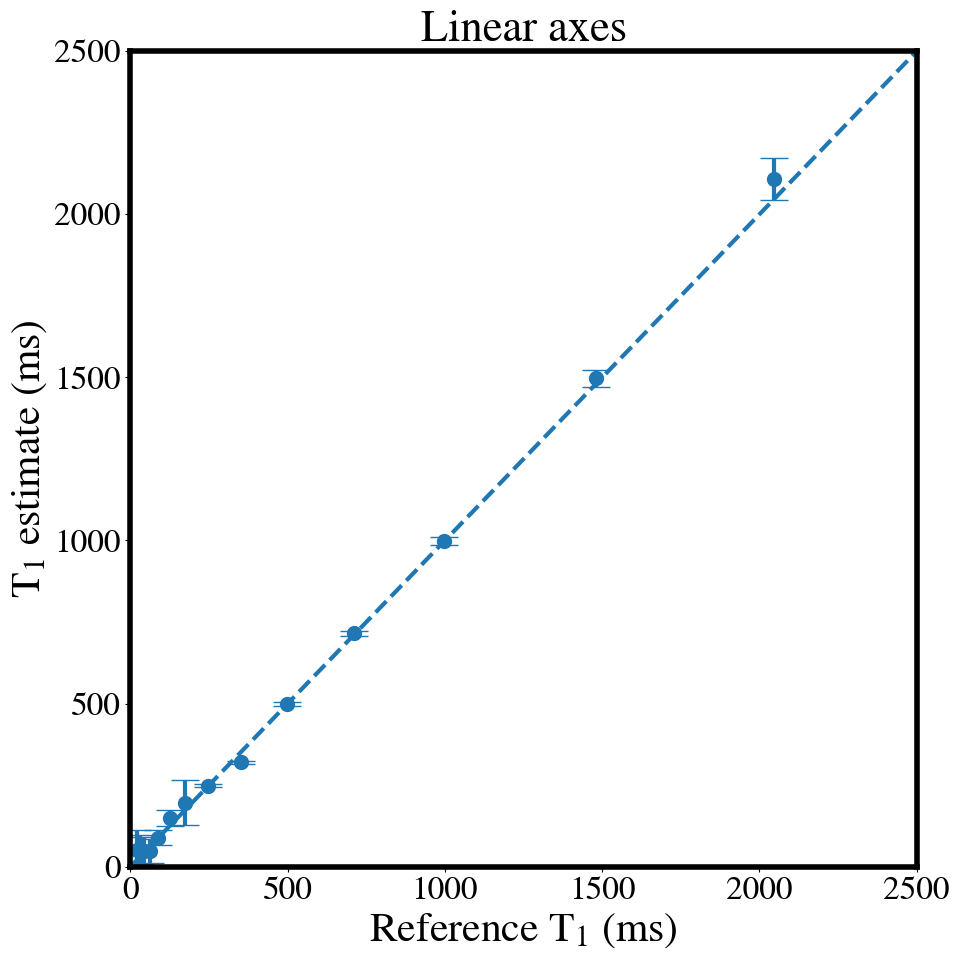
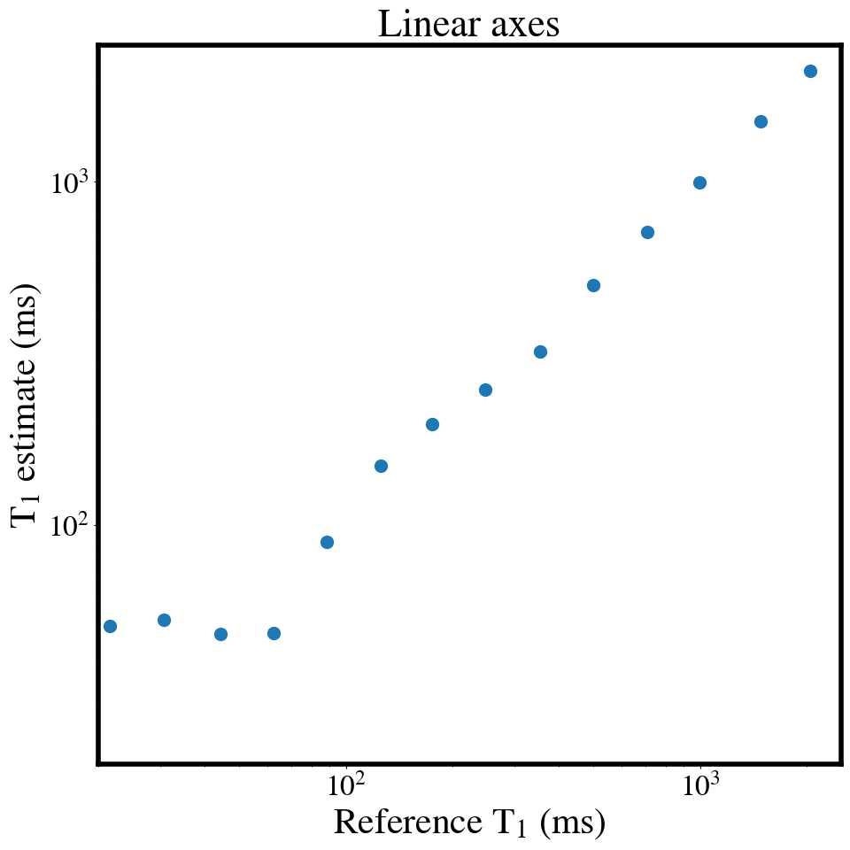
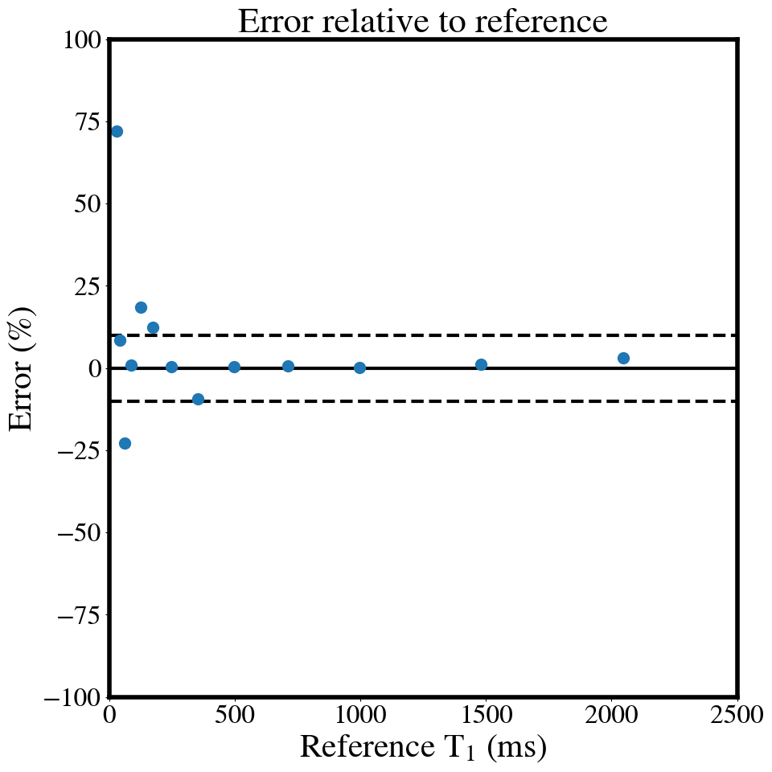
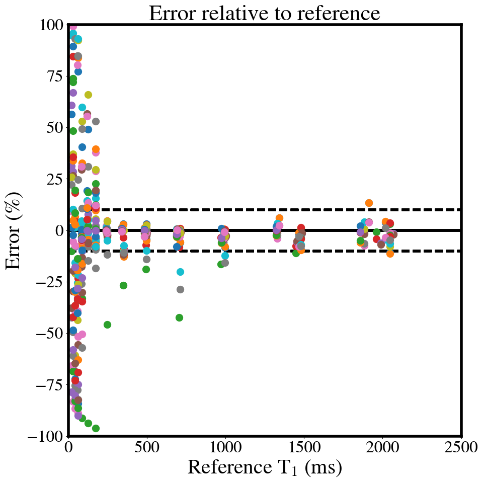
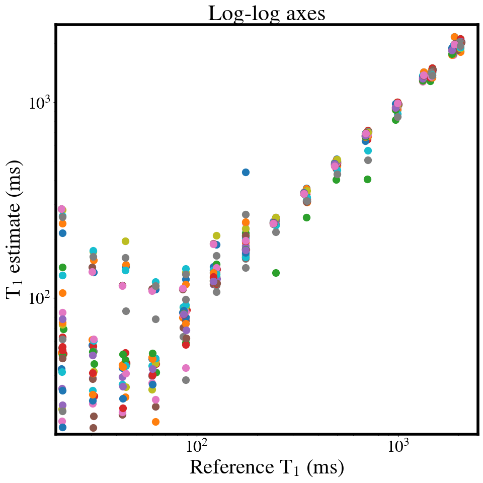

Phantom results
Phantom results#
Figure 3. Measured mean T1 values vs. temperature-corrected NIST reference values of the phantom spheres presented as linear plots (a,d), log-log plots (b,e), and plots of the error relative to reference T1 value. Plots (a–c) are of an example single dataset, whereas plots (d–f) are of all acquired datasets.
from os import path
if path.isdir('analysis')== False:
!git clone https://github.com/rrsg2020/analysis.git
# Imports
import warnings
warnings.filterwarnings("ignore")
from pathlib import Path
import pandas as pd
import json
import nibabel as nib
import numpy as np
from analysis.src.database import *
from analysis.src.nist import get_reference_NIST_values, get_NIST_ids
from analysis.src.tools import calc_error
from analysis.src.nist import temperature_correction
import matplotlib.pyplot as plt
plt.style.use('analysis/custom_matplotlibrc')
plt.rcParams["figure.figsize"] = (10,10)
fig_id = 0
database_path = Path('analysis/databases/3T_NIST_T1maps_database.pkl')
output_folder = Path("analysis/plots/03_singledataset_scatter_NIST-temperature-corrected/")
estimate_type = 'mean' # median or mean
## Define Functions
def plot_single_scatter(x, y, y_std,
title, x_label, y_label,
file_prefix, folder_path, fig_id,
y_type='linear'):
if y_type is 'linear':
plt.errorbar(x,y, y_std, fmt='o', solid_capstyle='projecting')
ax = plt.gca()
ax.axline((1, 1), slope=1, linestyle='dashed')
ax.set_ylim(ymin=0, ymax=2500)
ax.set_xlim(xmin=0, xmax=2500)
if y_type is 'log':
plt.loglog(x,y,'o')
ax = plt.gca()
ax.set_ylim(ymin=20, ymax=2500)
ax.set_xlim(xmin=20, xmax=2500)
if y_type is 'error_t1':
plt.errorbar(x,calc_error(x,y), fmt='o')
ax = plt.gca()
ax.axline((1, 0), slope=0, color='k')
ax.axline((1, -10), slope=0, linestyle='dashed', color='k')
ax.axline((1, 10), slope=0, linestyle='dashed', color='k')
ax.set_ylim(ymin=-100, ymax=100)
ax.set_xlim(xmin=0, xmax=2500)
plt.title(title)
plt.xlabel(x_label)
plt.ylabel(y_label)
fig = plt.gcf()
folder_path.mkdir(parents=True, exist_ok=True)
if fig_id<10:
filename = "0" + str(fig_id) + "_" + file_prefix
else:
filename = str(fig_id) + "_" + file_prefix
fig.savefig(folder_path / (str(filename) + '.svg'), facecolor='white')
fig.savefig(folder_path / (str(filename) + '.png'), facecolor='white')
fig_id = fig_id + 1
plt.show()
return fig_id
## Load database
df = pd.read_pickle(database_path)
## Initialize array
dataset_estimate = np.array([])
dataset_std = np.array([])
index = 6.001
serial_number = df.loc[index]['phantom serial number']
for key in get_NIST_ids():
if estimate_type == 'mean':
dataset_estimate = np.append(dataset_estimate, np.mean(df.loc[index][key]))
elif estimate_type == 'median':
dataset_estimate = np.append(dataset_estimate, np.median(df.loc[index][key]))
else:
Exception('Unsupported dataset estimate type.')
dataset_std = np.append(dataset_std, np.std(df.loc[index][key]))
ref_values = get_reference_NIST_values(serial_number)
temperature = df.loc[index]['phantom temperature']
temp_corrected_ref_values = temperature_correction(temperature, serial_number)



output_folder = Path("analysis/plots/04_alldatasets_scatter_NIST-temperature-corrected/")
## Initialize array
dataset_mean = np.zeros((1,14))
dataset_std = np.zeros((1,14))
version = np.array([])
temperature = np.array([])
ref_values = np.zeros((1,14))
ii=0
for index, row in df.iterrows():
if type(df.loc[index]['T1 - NIST sphere 1']) is np.ndarray:
version = np.append(version,df.loc[index]['phantom serial number'])
temperature = np.append(temperature, df.loc[index]['phantom temperature'])
if version[ii] is None:
version[ii] = 999 # Missing version, only known case is one where we have version > 42 right now.
if temperature[ii] is None:
temperature[ii] = 20 # Missing temperature, assume it to be 20C (reference temperature).
if ii==0:
ref_values = get_reference_NIST_values(version[ii])
temp_corrected_ref_values = temperature_correction(temperature[ii], version[ii])
else:
ref_values = np.vstack((ref_values, get_reference_NIST_values(version[ii])))
temp_corrected_ref_values = np.vstack((temp_corrected_ref_values, temperature_correction(temperature[ii], version[ii])))
tmp_dataset_estimate = np.array([])
tmp_dataset_std = np.array([])
for key in get_NIST_ids():
if estimate_type is 'mean':
tmp_dataset_estimate = np.append(tmp_dataset_estimate, np.mean(df.loc[index][key]))
elif estimate_type is 'median':
tmp_dataset_estimate = np.append(tmp_dataset_estimate, np.median(df.loc[index][key]))
else:
Exception('Unsupported dataset estimate type.')
tmp_dataset_std = np.append(tmp_dataset_std, np.std(df.loc[index][key]))
if ii==0:
dataset_estimate = tmp_dataset_estimate
dataset_std = tmp_dataset_std
else:
dataset_estimate = np.vstack((dataset_estimate, tmp_dataset_estimate))
dataset_std = np.vstack((dataset_std, tmp_dataset_std))
ii=ii+1
## Setup for plots
fig_id = 0
dims=ref_values.shape
file_prefix = 'alldatasets'

